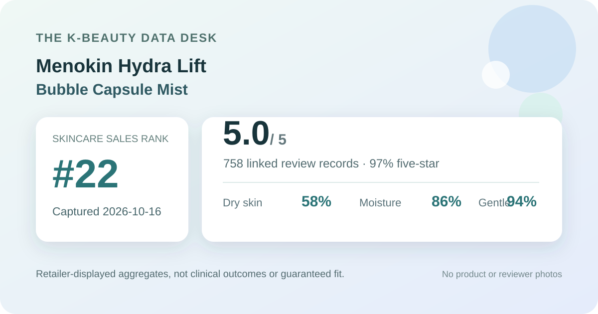

Data captured October 16, 2026. This analysis uses only Olive Young Korea's displayed aggregate rating, star distribution, and anonymous shopper polls. It does not reproduce or translate individual review text, names, or photos.

The short version: The listing showed 5.0 out of 5 from 758 review records. The displayed rating split was 97% five-star, 2% four-star, 1% three-star, and 0% each for two- and one-star. Dry skin, moisture concern, and the gentle response led their respective shopper polls.
The visible average was 5.0 stars. The product header displayed 758 review records, and the detailed review panel repeated the same count. That agreement is important: it means this snapshot does not combine a current headline score with a different or stale review total.
The detailed panel displayed this rounded star distribution:
This is a strongly positive storefront satisfaction pattern, but it is not a controlled result. The interface does not establish how the retailer verified each record, which purchase option every respondent used, how long the product was used, or what else was in each routine. A rounded 0% category can still conceal a very small number of responses.
The skin-type poll showed 58% dry, 36% combination, and 6% oily. Dry skin is the clearest majority in this displayed sample. Combination skin still forms a substantial secondary group, while oily skin has much thinner representation.
That mix is most useful for understanding the sample, not predicting a result. A dry-skin reader can see that many respondents selected the same broad label, but the poll does not control climate, season, age, routine, application amount, or how shoppers define dryness. An oily-skin reader should treat the six-percent representation as especially limited context rather than evidence for or against personal fit.
The separate concern poll displayed 86% moisture, 8% soothing, and 6% wrinkle or brightening concern. This indicates what broad category respondents chose inside the retailer questionnaire. It does not measure water content, transepidermal water loss, redness, wrinkle depth, pigmentation, or any other clinical endpoint.
The title includes “Hydra Lift” and “Quick Glow,” but those are identification and marketing words, not findings from this analysis. The aggregate data supports saying that moisture was the dominant shopper concern in the displayed poll. It does not support saying that the product lifted skin, created measured glow, repaired a barrier, or delivered a particular duration of hydration.
The irritation poll showed 94% gentle, 6% ordinary, and 0% felt irritation. The leading signal is favorable, but the zero is a rounded interface share rather than proof of universal tolerance. The sample also cannot identify allergies, fragrance sensitivity, eye-area exposure, or interactions with other products.
Retailer polls are self-reported and descriptive. They cannot diagnose sensitive skin, confirm hypoallergenicity, or guarantee a reaction-free experience. People with a known allergy, an active skin condition, or a history of reactions should check the current package ingredient list and warnings, and seek qualified advice when appropriate.
The retailer places the product in the facial mist category and describes it as a bubble-capsule mist. In general format terms, that suggests a fluid leave-on product delivered through a spray mechanism, with visible or named capsule-like elements. It does not reveal exact droplet size, spray angle, scent, viscosity, oil-to-water balance, tack, sheen, absorption speed, or makeup compatibility.
I did not handle or apply this product. The visual above is deliberately generic and does not reconstruct its real appearance. Follow the current package directions for shaking, spray distance, application amount, frequency, eye-area precautions, and layering. A spray also makes dose comparisons difficult unless the current label provides a clear number of pumps or another repeatable measure.
This Hydra Lift listing is distinct from the previously covered Menokin Calming Moisture mist. The two listings used different variant wording and different source product identifiers. That distinction is enough to treat them as separate retail candidates, but it is not enough to infer which ingredients differ or which one is more hydrating, calming, luminous, or suitable for a particular skin type.
Cross-listing comparisons also require matched capture dates and equivalent questionnaires. The older Calming Moisture snapshot had a different review base and poll composition. Comparing the raw percentages as if the products were tested head-to-head would ignore changes in shoppers, timing, promotion, and sample size.
At capture, the Korean listing showed a ₩31,000 reference price and a ₩22,900 promotional price for a 98 ml product with a 30 ml companion size. The page displayed a unit-price line of ₩1,789 per 10 ml. Prices, coupons, gifts, selected options, and stock can change quickly.
This snapshot is a dated shelf anchor, not a current quote for another market. Before comparing value, confirm the selected sizes, final checkout total, regional formula, seller, shipping, returns, and whether a promotional extra is actually included. A lower promotional price cannot establish better skincare performance.
The defensible reading is narrow: this was the first valid unpublished product found after 21 covered positions in the captured skincare ranking; its 758-record profile was overwhelmingly positive; dry skin dominated the skin-type poll; moisture dominated the concern poll; and the irritation poll leaned strongly gentle.
For someone comparing facial mists, those signals justify placing the product on a research shortlist. The next useful checks are the current regional ingredient label, directions, selected pack, and real checkout price. The data does not justify calling it a guaranteed glow booster, lifting treatment, medical solution, perfectly irritation-free formula, or certain match for dry skin.
Dry skin was the largest displayed skin-type response at 58%, followed by combination skin at 36% and oily skin at 6%. That describes poll representation, not proven suitability or performance.
The captured irritation poll showed 94% gentle, 6% ordinary, and 0% felt irritation. Rounded self-reported aggregates cannot predict an individual's tolerance or prove that nobody reacted.
No. The rating is a retail satisfaction signal, and the concern poll is not a clinical measurement. Neither establishes hydration, glow, lifting, soothing, or makeup performance.
They were separate Olive Young listings with different variant wording and source identifiers. This article analyzes only the Hydra Lift listing and does not infer formula differences.
The listing identifies a bubble-capsule facial mist format. This analysis did not apply the product, so it does not claim a specific droplet size, scent, tack, sheen, absorption speed, or makeup compatibility.
Source: Olive Young Korea product page, captured October 16, 2026. Product title, ranking, pack, price, rating, review count, star shares, and poll values can change.
Published by The K-Beauty Data Desk. The source does not independently verify every buyer's identity, and this page is an editorial analysis of retailer-displayed aggregates—not medical advice or a substitute for the current product label.
← All reviews · Review-volume rankings · Skin-poll explorer · Methodology